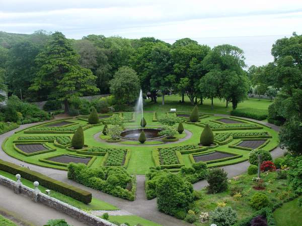
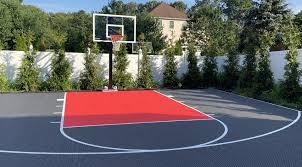

courses we offer
Homerton College, part of the University of Cambridge, offers a diverse range of undergraduate courses
including Architecture, Asian and Middle Eastern Studies, Chemical Engineering, Classics, Computer Science,
Economics, Education, Engineering, English, and Geography.
These programs are designed to provide students with comprehensive academic knowledge and practical skills
in their chosen fields, fostering a rich and dynamic learning environment.
Engineering
The Engineering program offers a rigorous and versatile education in various engineering disciplines
such as civil, mechanical, electrical, and aerospace engineering. Students receive a solid grounding
in
mathematics and physics, along with practical experience through projects and laboratory work,
preparing
them for diverse engineering careers.
English
The English course provides an in-depth study of literature from various periods and genres,
including
medieval, Renaissance, modern, and contemporary works. Students develop critical thinking and
analytical
skills through close reading, essay writing, and engaging with literary theory and history.
History
The History program covers a wide range of periods and regions, from ancient to modern history,
including
British, European, American, and world history. Students analyze historical events, trends, and
movements,
developing research skills and a deep understanding of historical contexts and perspectives
Our Global Campus
Homerton Global Campus (HGC) is a dynamic educational institution known for its commitment to global learning
and interdisciplinary studies. Located in a diverse and vibrant environment, HGC offers a wide range of
undergraduate and postgraduate programs designed to equip students with the skills and knowledge needed to
thrive in a rapidly changing world.
The campus is known for its innovative teaching methods, state-of-the-art facilities, and a strong emphasis
on research and community engagement.

NEW JERSEY

SAN FRANCISCO
Our Facilities
Homerton College, part of the University of Cambridge, offers a range of facilities including diverse
accommodation options, a well-stocked library, a dining hall, sports amenities like a gym and tennis courts,
and extensive gardens.

World Class Library
The Homerton College Library is well-stocked with academic resources, offering a quiet and conducive
environment for study and research.

Our Peaceful Garden
Homerton College features beautifully maintained gardens and green spaces that provide a serene
environment for relaxation and outdoor activities.

Our Classic BB Court
Homerton College offers basketball facilities, including a court where students can play and practice
the sport.

Our Cafeteria
Homerton College has a cafeteria that provides a variety of dining options for students and staff,
offering both casual and informal meals.
What Our Students Says!!
Testimonials about Homerton College often highlight its welcoming and supportive community, excellent
facilities, and the beautiful campus environment.
Students frequently praise the college for its strong academic support, vibrant social life, and the
personal attention from tutors and staff.

User 1:praised Homerton College for its exceptional sense of community and supportive
environment, highlighting the dedicated staff, excellent facilities, and the beautiful campus.
They appreciated the personal attention from tutors, the vibrant social life, and the overall
welcoming atmosphere that contributed significantly to their positive academic and social
experience.
Carloine Forbes

User 2: commended Homerton College for its strong academic support and diverse extracurricular
opportunities, noting that the well-maintained gardens and modern facilities created a stimulating and
enjoyable environment.
They found the college’s emphasis on personal growth and community engagement particularly valuable,
enhancing both their academic and personal development.
Damon Savlatore
Enroll For Our Various Online Courses Anywhere From The World
CONTACT US